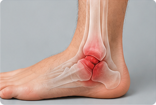

1. What Is a Sprain?
A sprain is an injury to the ligaments, which are strong bands of tissue that connect bones at a joint. Sprains most often happen in the ankle, but can also occur in the wrist, knee, or other joints.
Common symptoms:
- Pain around the joint
- Swelling
- Bruising
- Difficulty moving the joint